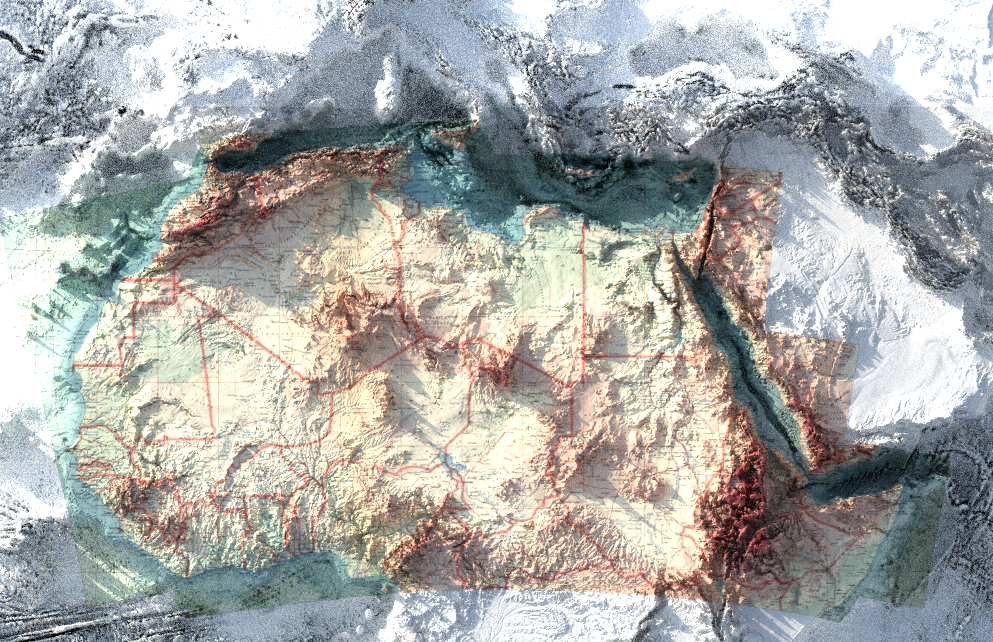

Project 2
Welcome to the detailed page for Project 2. This page will showcase the geospatial applications related to environmental GIS and remote sensing workflows. You’ll find textual content, code snippets, and visual outputs such as maps, screenshots, or 3D visualizations created with QGIS, GEE, Python, R, Blender, and Aerialod.
Project Overview
This project explores [brief summary of the project focus, e.g., mapping vegetation health using NDVI analysis].
Tools Used
This project utilized QGIS, Google Earth Engine (GEE), Python, R, and 3D software such as Blender and Aerialod to perform geospatial analysis and create visual outputs.
Code Example
# Example Python snippet
import geopandas as gpd
from rasterio.plot import show
# Load and display a GeoTIFF
data = gpd.read_file('example.shp')
show(data)Outputs
Below are some of the outputs generated during this project:
Conclusion
The project demonstrates how geospatial analysis can be used to [state the key takeaway of the project].